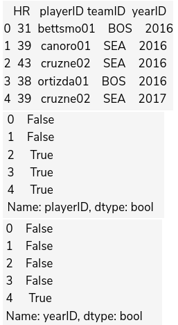

filtering
Chapter Goals:
• Understand how to filter a DataFrame based on filter conditions
• Write code to filter a dataset of MLB statistics
~~~~~~~~~~~~~~~~~~~~~~~~~~~~~~~~~
Filter conditions
In the Data Manipulation section, we used relation operations on NumPy arrays to create filter conditions.These filter conditions returned boolean arrays, which represented the locations of the elements that pass the filter.

In the code above, we created filter conditions for
df based on the columns labeled 'playerID', 'HR', and 'teamID'. The boolean Series outputs have True for the rows that pass the filter, and False for the rows that don't.~~~~~~~~~~~~~~~~~~~~~~~~~~~~~~~~~
Filters from function
Apart from relation operations, pandas provides various functions for creating specific filter conditions. For columns with string values, we can use str.startswith, str.endswith, and str.contains to filter for specific strings. These functions work the exact same as their namesakes from the Python standard library.
The code below shows various examples of string filter conditions. In the final example using
str.contains, we prepend the ~ operation, which negates the filter condition. This means our final filter condition checked for player IDs that do not contain 'o'.We can also create filter conditions that check for values in a specific set, by using the isin function. The function only takes in one argument, which is a list of values that we want to filter for.

In pandas, when a Series or DataFrame has a missing value at a location, it is represented by
NaN. The NaN value in pandas is equivalent to np.nan in NumPy.Similar to Numpy, we cannot use a relation operation to create a filter condition for
NaN values. Instead, we use the isna and notna functions.The
isna function returns True in the locations that contain NaN and False in the locations that don't, while the notna function does the opposite.~~~~~~~~~~~~~~~~~~~~~~~~~~~~~~~~~
Feature filtering
It is really easy to filter a DataFrame's rows based on filter conditions. Similar to direct indexing of a DataFrame, we use square brackets. However, the inside of the square brackets will now contain a filter condition.
When applying filter conditions within square brackets, we retrieve the rows of the DataFrame that pass the filter condition (i.e. the rows for which the filter condition is
True).~~~~~~~~~~~~~~~~~~~~~~~~~~~~~~~~~
~~~~~~~~~~~~~~~~~~~~~~~~~~~~~~~~~
~~~~~~~~~~~~~~~~~~~~~~~~~~~~~~~~~